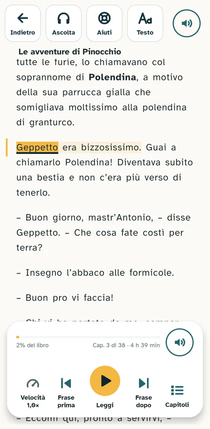
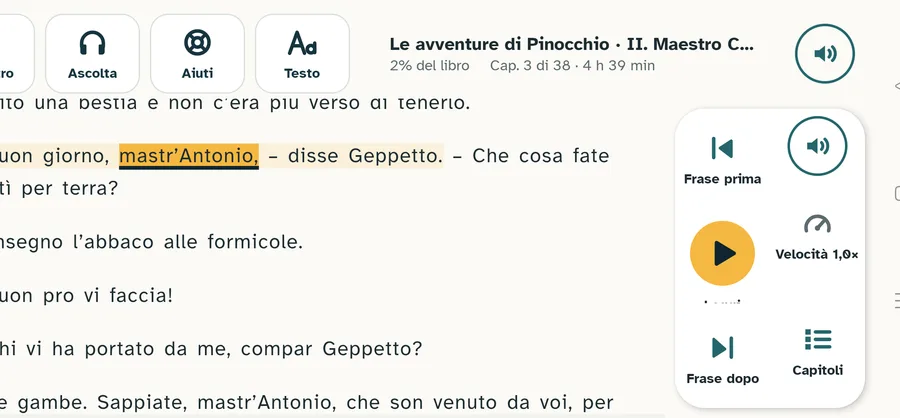
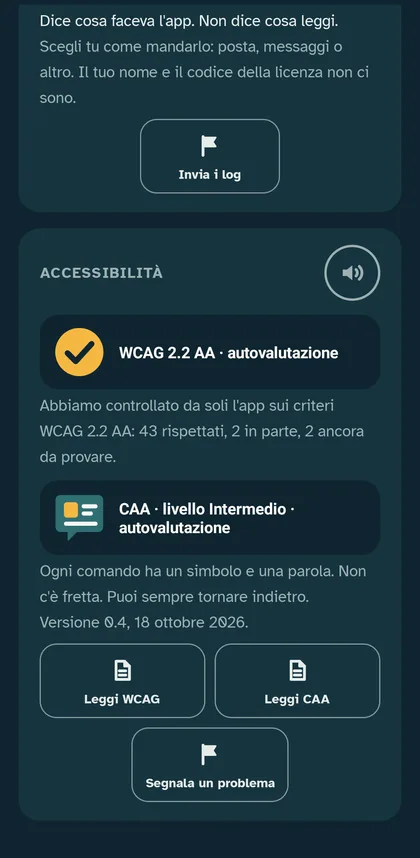

Documentazione
Accessibilità: WCAG 2.2
Relazione di autovalutazione di Farō Reader 0.4 per Android, criterio per criterio. Le WCAG 2.2 sono le regole internazionali del W3C per rendere accessibili siti e app. Per un'app le applichiamo come chiede la norma europea EN 301 549 (capitolo 11, software).
In breve
Ambito del logo: Farō Reader 0.4 per Android sugli schermi da tablet (lato corto di almeno 600 dp). Sul telefono resta aperto il criterio 1.4.4. Il logo è del W3C: lo usiamo come chiede il W3C, che non controlla e non convalida la nostra dichiarazione.
- Livello cercato: WCAG 2.2 AA, più sei criteri AAA utili a chi è dislessico.
- Esito: su 55 criteri A e AA, 46 conformi, 1 parzialmente conforme (1.4.4: carattere al 200% sul telefono), 8 non applicabili, nessuno non conforme. Sugli schermi da tablet tutti i criteri applicabili sono conformi.
- Data: 18 ottobre 2026. Versione valutata: 0.4 (versione di prova del 18 ottobre 2026).
- Autocertificazione: il team di Farō ha verificato l'app e autocertifica la versione 0.4 al livello WCAG 2.2 AA sugli schermi da tablet (lato corto di almeno 600 dp); sul telefono resta aperto il criterio 1.4.4. Non l'ha controllata un ente esterno.
Norme di riferimento
La valutazione segue le norme delle autorità che regolano l'accessibilità digitale:
- W3C, Web Content Accessibility Guidelines (WCAG) 2.2, Raccomandazione del W3C: i criteri, punto per punto.
- W3C, Understanding WCAG 2.2 e Requisiti di conformità: come si interpreta ogni criterio e come si dichiara la conformità.
- ETSI, CEN e CENELEC, norma europea EN 301 549, capitolo 11 (software): come le WCAG si applicano a un'app.
- W3C, WCAG2ICT: come leggere le WCAG per software che non è una pagina web.
Per la leggibilità delle scritte (3.1.5) usiamo l'indice Gulpease, messo a punto dal GULP, Gruppo universitario linguistico pedagogico dell'Università di Roma La Sapienza.
Come l'abbiamo controllato
| Sigla | Prova |
|---|---|
| G | Giro automatico su ogni schermata e ogni finestra, nei due orientamenti, su telefono e tablet. Uno strumento nostro legge dall'interno dell'app ogni elemento: simbolo, parola, nome per TalkBack, area di tocco, colori veri, scritte tagliate. Poi tocca ogni altoparlante e controlla che la voce parta e si fermi. |
| F | Foto di tutte le schermate: telefono e tablet, in verticale e in orizzontale (104 foto). |
| C | Lettura del codice dell'app. |
| CON | Contrasti calcolati su tutti i colori dell'app e dei tre temi di lettura. |
| M | Prove a mano: TalkBack su ogni schermata (ordine di lettura, nomi, ruoli, stati, messaggi), carattere di sistema al 200%, tastiera esterna. |
Dispositivi: tablet OPPO OPD2202 (Android 16, schermo 2000×2800) e telefono OPPO CPH1907 (Android 11, 360 dp di larghezza).
Esiti: C conforme · P parzialmente conforme · N non conforme · NA non applicabile.
Percepibile
Le informazioni si devono poter vedere, sentire o leggere in più di un modo.
| Criterio | Esito | Perché |
|---|---|---|
| 1.1.1 Contenuti non testuali (A) | C (G) | Ogni comando ha un nome che TalkBack legge, e il nome comincia con la parola scritta. Le immagini solo decorative (la copertina, il faro) sono nascoste a TalkBack. |
| 1.2.1–1.2.5 Audio e video (A, AA) | NA | L'app non contiene audio o video registrati: la voce legge il testo che è sullo schermo. |
| 1.3.1 Informazioni e correlazioni (A) | C (C, G) | I titoli di pagina, di sezione e delle schede sono intestazioni per TalkBack. Le scelte sono gruppi con il loro titolo: "Quando premo Play, elenco, 3 elementi"; ogni scelta dice la sua posizione e se è scelta. |
| 1.3.2 Sequenza significativa (A) | C (M, C) | Con TalkBack l'ordine di lettura segue quello che si vede: pulsanti, titolo, altoparlante; poi il contenuto. |
| 1.3.3 Caratteristiche sensoriali (A) | C (C) | Le istruzioni dicono il nome della cosa ("l'altoparlante accanto a un titolo"), non solo la forma o il posto. |
| 1.3.4 Orientamento (AA) | C (F) | Ogni schermata funziona in verticale e in orizzontale. In orizzontale il lettore sposta i comandi in una colonna, l'audiolibro mette la copertina a sinistra. Chi vuole può bloccare la rotazione dal pannello Testo. |
| 1.3.5 Scopo degli input (AA) | C (C) | L'unico campo con dati personali è il nome: dichiara che è un nome, così la tastiera può proporlo. |
| 1.4.1 Uso del colore (A) | C (F) | La scelta ha il cerchietto con la spunta, non solo il colore. La parola in lettura è gialla e sottolineata. I messaggi hanno icona e parola. |
| 1.4.2 Controllo dell'audio (A) | C (C) | La voce parte solo quando la chiedi e si ferma con Pausa o ritoccando l'altoparlante. Il saluto all'apertura dura meno di 3 secondi e si spegne dalle Impostazioni. |
| 1.4.3 Contrasto minimo (AA) | C (G, CON) | Il giro misura i colori veri di ogni scritta: nessuna sotto 4,5:1 (3:1 per le scritte grandi), in tutti e tre i temi. |
| 1.4.4 Ridimensionamento del testo (AA) | P (M) | Con il carattere di sistema al 200% l'interfaccia resta leggibile e usabile sugli schermi da tablet. Sul telefono qualche scritta non si legge intera. Il testo del libro va da 14 a 28 sp con la barra del pannello Testo. |
| 1.4.5 Immagini di testo (AA) | C (C) | Non ci sono immagini di testo. I bollini delle Impostazioni hanno la scritta vera accanto al disegno. |
| 1.4.10 Ricomposizione (AA) | C (M, F, G) | Sul telefono a 360 dp nessuna schermata scorre di lato e le scritte vanno a capo; con il carattere al 200% vale quanto detto per 1.4.4. |
| 1.4.11 Contrasto non testuale (AA) | C (CON) | La parola in lettura ha una sottolineatura scura (Notte, o Nebbia sul tema scuro) che supera 3:1 sulla pagina. Il bordo delle tessere supera 3:1 sullo sfondo. |
| 1.4.12 Spaziatura del testo (AA) | C (C, G) | Nel lettore interlinea e spazio tra le lettere si scelgono su quattro livelli. Il giro controlla che nessuna scritta dell'interfaccia sia tagliata. |
| 1.4.13 Contenuto al passaggio o al fuoco (AA) | C (C, F) | Il fumetto con le sillabe resta finché serve e si chiude con la ✕, toccando fuori o con Leggi. |


A sinistra: la parola in lettura è gialla e sottolineata (1.4.1, 1.4.11); ogni comando ha simbolo e parola (1.1.1). A destra: le scelte hanno la spunta (1.4.1) e ogni sezione ha il suo titolo e il suo altoparlante (1.3.1).
Utilizzabile
Ogni comando si deve poter usare, senza fretta e senza gesti difficili.
| Criterio | Esito | Perché |
|---|---|---|
| 2.1.1 Tastiera (A) | C (M) | Con una tastiera collegata al tablet, Tab e le frecce raggiungono ogni comando: barra del titolo, altoparlanti, copertine, capitoli, comandi di lettura. Invio li attiva. |
| 2.1.2 Nessuna trappola per la tastiera (A) | C (M) | Esc fa come Indietro: chiude la finestra o il pannello aperto, poi torna alla pagina prima. Tab continua sempre e ricomincia dall'inizio. |
| 2.1.4 Scorciatoie da tastiera (A) | C (C) | Non ci sono scorciatoie fatte di un solo carattere. |
| 2.2.1 Regolazione dei tempi (A) | C (C) | Le proposte e gli errori restano finché rispondi. Spariscono da soli solo gli avvisi che non chiedono niente, e quello che dicono resta scritto nella pagina. |
| 2.2.2 Pausa, stop, nascondi (A) | C (C) | Il faro del benvenuto dura meno di 5 secondi. L'anello dell'altoparlante gira solo mentre la voce legge e si ferma ritoccandolo. |
| 2.3.1 Tre lampeggiamenti (A) | C (C) | Niente lampeggia. |
| 2.4.1 Salto di blocchi (A) | NA | Per la EN 301 549 non vale per le app. Ogni sezione ha comunque il suo titolo. |
| 2.4.2 Titolo della pagina (A) | C (C, F) | Ogni schermata ha il suo titolo nella stessa barra in alto. Nel lettore e nell'audiolibro il titolo è quello del libro. |
| 2.4.3 Ordine del fuoco (A) | C (M) | Il fuoco segue l'ordine che si vede: Indietro, Ascolta, Aiuti, Testo, altoparlante, poi i comandi di lettura dall'alto in basso. |
| 2.4.4 Scopo del collegamento (A) | C (G) | Ogni pulsante dice con una parola cosa fa. |
| 2.4.5 Più modi (AA) | C (C) | Ai capitoli si arriva dall'indice, dalla scheda del libro, con frase prima e frase dopo, e dall'audiolibro. |
| 2.4.6 Intestazioni ed etichette (AA) | C (F) | Titoli e scritte dicono cosa c'è sotto. |
| 2.4.7 Fuoco visibile (AA) | C (M, F) | Il comando con il fuoco ha un contorno giallo (Lanterna) di 3 dp; anche le copertine e le righe dei capitoli. |
| 2.4.11 Fuoco non nascosto (AA) | C (M) | Il comando con il fuoco resta visibile: le liste scorrono per mostrarlo e i pannelli non coprono la barra dei comandi. |
| 2.5.1 Gesti con il puntatore (A) | C (C) | Il pizzico per ingrandire ha la barra della dimensione; lo scorrimento ha frase prima, frase dopo e capitoli. |
| 2.5.2 Annullamento del puntatore (A) | C (C) | Le azioni partono quando sollevi il dito: se lo trascini via, non succede niente. |
| 2.5.3 Etichetta nel nome (A) | C (G) | Il giro controlla che il nome letto da TalkBack contenga sempre la parola scritta: "Leggi, riprendi la lettura", "Indietro, torna alla libreria". |
| 2.5.4 Azionamento da movimento (A) | NA | Nessuna funzione si attiva scuotendo o inclinando il dispositivo. |
| 2.5.7 Movimenti di trascinamento (AA) | C (C) | La barra della dimensione risponde anche a un tocco in un punto. La velocità è un gruppo di scelte. |
| 2.5.8 Dimensione del bersaglio (AA) | C (G) | Il giro misura ogni comando: tutti almeno 48 × 48 dp. |

La stessa barra del titolo in ogni pagina, con il nome del libro nel lettore (2.4.2); in orizzontale tutto resta usabile (1.3.4); ogni comando è almeno 48 dp (2.5.8).
Comprensibile
Le scritte si devono capire e l'app si deve comportare come ci si aspetta.
| Criterio | Esito | Perché |
|---|---|---|
| 3.1.1 Lingua della pagina (A) | C (C) | L'app dichiara l'italiano. |
| 3.1.2 Lingua delle parti (AA) | NA | Dipende dalla lingua scritta nel file EPUB del libro. |
| 3.2.1 Al fuoco (A) | C (C) | Spostare il fuoco non cambia schermata. |
| 3.2.2 All'input (A) | C (C) | Scegliere un'opzione non apre altro. La scelta della voce chiude la sua finestra, come ci si aspetta. |
| 3.2.3 Navigazione coerente (AA) | C (F) | La stessa barra del titolo in tutte le pagine; i comandi di lettura sempre nello stesso posto. |
| 3.2.4 Identificazione coerente (AA) | C (C) | Un simbolo ha un solo significato in tutta l'app (vedi la relazione CAA, criterio B3). |
| 3.2.6 Aiuto coerente (A) | C (F) | "Segnala un problema" è sempre nelle Impostazioni; l'altoparlante è in ogni pagina, sezione e finestra. |
| 3.3.1 Identificazione degli errori (A) | C (F) | Gli errori sono scritti, con icona e bordo. Un codice di licenza sbagliato è spiegato a parole. |
| 3.3.2 Etichette o istruzioni (A) | C (F) | I campi hanno un'etichetta e una frase che spiega. |
| 3.3.3 Suggerimenti per gli errori (AA) | C (C) | Ogni errore dice cosa fare. |
| 3.3.4 Prevenzione degli errori (AA) | C (C) | Prima di togliere un libro o cancellare l'audio l'app chiede conferma. |
| 3.3.7 Inserimento ridondante (A) | C (C) | Il nome si chiede una volta sola. |
| 3.3.8 Autenticazione accessibile (AA) | C (C) | Non ci sono password. Il codice della licenza si incolla. |
Robusto
L'app deve funzionare con le tecnologie assistive, come TalkBack.
| Criterio | Esito | Perché |
|---|---|---|
| 4.1.2 Nome, ruolo, valore (A) | C (M, C, G) | Con TalkBack ogni tessera dice cos'è (pulsante, scelta, casella) e se è scelta; i gruppi di scelte dicono quanti elementi hanno. |
| 4.1.3 Messaggi di stato (AA) | C (C) | Avvisi e proposte vengono annunciati senza spostare il fuoco. |
Criteri AAA che abbiamo scelto
Non sono richiesti per il livello AA, ma aiutano molto chi è dislessico.
| Criterio | Esito | Perché |
|---|---|---|
| 1.4.8 Presentazione visiva | P | Tre temi, colonna di testo stretta (34 em al massimo), testo allineato a sinistra, interlinea regolabile. Lo spazio tra i paragrafi va ancora misurato. |
| 2.2.3 Nessun limite di tempo | P | Gli avvisi che non chiedono niente spariscono da soli dopo qualche secondo. |
| 2.2.4 Interruzioni | C | Il controllo degli aggiornamenti si spegne; le proposte non fermano la voce. |
| 2.5.5 Dimensione del bersaglio | C | Tutto almeno 48 dp. |
| 3.1.5 Livello di lettura | C | Ogni scritta dell'app è controllata in automatico: frasi di 15 parole al massimo e indice Gulpease di almeno 80 (facile) per i testi lunghi. |
| 3.3.5 Aiuto | C | Un altoparlante in ogni pagina, sezione, pannello e finestra legge quella parte; sotto le scelte c'è una frase che spiega. |
Punti aperti
- 1.4.4 Ridimensionamento del testo (AA): sul telefono, con il carattere di sistema al 200%, qualche scritta non si legge intera.
- 1.4.8 Presentazione visiva (AAA): lo spazio tra i paragrafi del lettore deve essere almeno 1,5 volte l'interlinea. Va misurato e, se serve, allargato.
Rifacciamo questa valutazione a ogni versione che cambia l'interfaccia. Se trovi un problema, scrivicelo.
I bollini

Nelle Impostazioni dell'app i bollini sono nostri e dicono "autovalutazione". Il logo di conformità qui in alto è del W3C e rimanda alla sua spiegazione del livello AA.